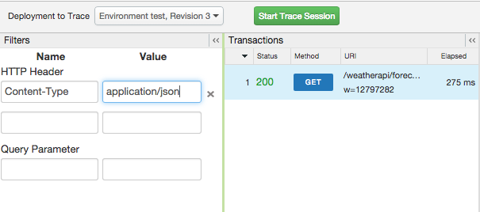

[toc]
Trace is a tool for troubleshooting and monitoring API proxies running on Apigee Edge. Trace lets you probe the details of each step through an API proxy flow.
When tracing API calls sent to a target server, Trace also lets you view the call as a cURL command, which lets you see the HTTP headers and message payload in a single place. Great for debugging.
For details, see http://docs.apigee.com/node/14782.
You can download an XML file of the trace results for viewing offline. The file shows the complete details of the listening session including the contents of all headers, variables and policies. For details, see http://docs.apigee.com/node/14782.
To enable root-case analysis, filters enable you to target specific calls that may be causing problems. For example, you may need to zero in on requests that have specific content or requests coming from specific partners or apps.

Because the management API is RESTful, response messages can be interpreted as a combination of an HTTP status code and an Edge-specific error message.
For example, if you try to create a company entity with the same name as an existing company, the response is:
404
{
"code": "messaging.config.beans.ApplicationDoesNotExist",
"message": "APIProxy named WeatherApi does not exist in organization mycompany",
"contexts": []
}
Here are some important HTTP status codes and what they mean in Apigee Edge:
HTTP 2xx: Any status code in the 200 range means 'success'. In some cases only a 204 HTTP status code is issued when an operation succeeds. 204 means that the response is submitted with no content, usually because a DELETE operation succeeded.
HTTP 401: This an authorization failure. It means that the credentials that you used to make a request map to a user who lacks permission to perform the operation. Verify the roles for the account you are using.
HTTP 403: This an authorization failure. It means that the username and password combination you are using is not valid for the organization you specified. To test your credentials, login to enterprise.apigee.com/login. Once logged in check your account settings to see the organization name. In some situations, you may belong to multiple organizations. Make sure that you are using the correct credentials for you organization. Check your spelling. If you need an account, sign up.
HTTP 404: The object wasn't found. This is usually happens because of misspelling in your request URL, but it may also happen if you try to update an object that doesn't exist (for example, the wrong revision of an API).
HTTP 405: This means 'Method not allowed'. This status code simply means that you, for example, used the GET verb for an API call that requires the POST verb.
HTTP 415: Unsupported media type. This error usually occurs on POST or PUT requests when the Content-type HTTP header is set to the wrong value. For example, imagine that you POST the following to an API that only supports JSON:
$ curl -X POST -H "Content-type:text/xml" -d '<SomeXML>' https://api.company.com/v1/json_service
The result would be an HTTP 415 error.
For GET requests,remember to use the Accept header instead of the Content-type header.
HTTP 429: Too many requests. The rate limit was exceeded on Quota or Spike Arrest policies. The current default status code for exceeding the rate limit is 500, but the default will soon change to 429. See http://docs.apigee.com/node/53 and http://docs.apigee.com/node/56 for information on how to temporarily change the 500 to a 429 until 429 becomes the default status code.
HTTP 500: This is an internal server error. It means that you should contact Apigee Support to resolve the issue.
Apigee Edge organizations can be configured to return an HTTP status code of 429 (Too Many Requests) instead of 500 for all requests that exceed a rate limit set by some rate-limiting policies. For more information, see http://docs.apigee.com/node/53 and http://docs.apigee.com/node/56.
The following sections provide considerations for using cURL on Windows.
Command-line syntax
All of the example commands in the documentation use Linux/Unix command-line syntax. Consider the following when you are using cURL from a Windows command prompt:
curl and HTTPS
The management API requires TLS/SSL (HTTPS). If you encounter TLS/SSL Certificate problems in response to your cURL commands, you can:
Protocol https not supported or disabled in libcurl
Usually seen on machines running Windows. This means that you downloaded and installed a version of curl that did not include the libcurl package. Download a different package from http://curl.haxx.se/download.html, and make sure it includes libcurl for TLS/SSL.
You may see this error when you submit a request to your API proxy after you deploy it to API Services. This error means that API Services, while attempting to route the request to the appropriate API proxy, cannot find an API proxy that matches the request URI path. This usually happens because your request URL does not match the base path for any API proxies currently deployed in the environment. (Note that API Services validates that all base paths are unique when a new API proxy is imported or generated.)
python: can't open file 'tools/deploy.py': [Errno 2] No such file or directorydeploy.py is incorrect. If you see the following result on import, it indicates that you are running the deploy tool from the wrong directory.
Import failed to /v1/organizations/myorg/apis?action=import&name=weatherapi with status 500:
{
"code" : "messaging.config.beans.ImportFailed",
"message" : "Failed to import the bundle : java.util.zip.ZipException: ZIP file must have at least one entry",
"contexts" : [ ]
}
To fix this issue, run deploy.py from the base directory of the API Services. In the deploy tool command, specify the directory that contains the ./apiproxy directory.
In Cygwin on Windows, if you get an error saying '\r': command not found when trying to deploy the sample proxies, you'll need to run the dos2unix utility to convert line breaks in the shell (.sh) files. You may need to install the utility if the which dos2unix command can't find it. The Cygwin installer should let you install it.
To run dos2unix recursively on the samples:
/api-platform-samples directory (the samples root directory).find . -name *.sh |xargs dos2unixIf you're using the JavaScript policy to execute custom JavaScript code, note that you can use the print() function to output debug information to the Trace tool. This function is available directly through the JavaScript object model. For details, see "Debug JavaScript with print() statements".
API proxy bundles cannot exceed 15MB in size. Bundles larger than that cause API proxy import to hang or fail. To work around this in Edge for Private Cloud, see http://docs.apigee.com/node/12868.